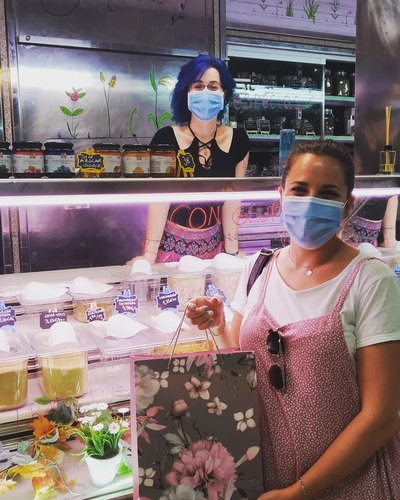

La vida en la Grane
Es hoy! Es hoy!
En el local 27 está la última incorporación del mercado, La Granelería Coslada. Inaugurada en Julio de 2021 por Cristina y Elisa, de 32 y 30 años respectivamente. El proyecto surgió a raíz de la jubilación de Jose, uno de los charcuteros de la galería, a Elisa le dió pena que se pudiera cerrar el comercio y pensó en comprarlo, pero se le adelantaron. La espinita de abrir algo se quedó clavada y pensó "¿qué podría abrir aquí que le falte al mercado? ¡Pues una tienda de productos a granel!". Le comentó la idea a su amiga Cristina y juntas buscaron un local, lo limpiaron a fondo y lo transformaron en una tienda a granel algo distinta de lo que estamos acostumbrados. Especializadas en productos sin gluten, tienen pastas de todo tipo, legumbres variadas, arroces, cereales, productos veganos, cafés tostados al natural, especias, cosmética natural, productos de limpieza aunque están siendo conocidas en el barrio por sus espectaculares y deliciosas infusiones y tés, que hacen que todo el mundo repita y vuelva al local. En redes las podéis encontrar como La Granelería Coslada en Facebook y en Instagram como @la.graneleria.coslada donde van publicando las novedades de su tienda, información sobre reducir plásticos en la vida diaria y muchas cosas más. Por las mañanas os atenderá Amor, su empleada, ya que tanto Cris como Elisa tienen otro trabajo. Ven y tómate un café o un té con ellas, cata de té diaria gratuita, para que os enamoreis de sus tés y su tiendita. Estamos en la Plaza del Sol S/N en Coslada, de lunes a viernes de 9 a 14 y de 17 a 20, sábados de 9 a 14.
Dia de la Juventud
HOY ES EL DÍA DE LA JUVENTUD Como jóvenes que somos sabemos lo difícil que lo tiene nuestra generación en varios sentidos. Por eso solo hoy, a todo menor de 35 años tendrá un descuento de un 5% en nuestros productos. Solo tenéis que enseñar el DNI en tienda para que se aplique el descuento. ¡Corre que estamos hoy hasta las 14h!